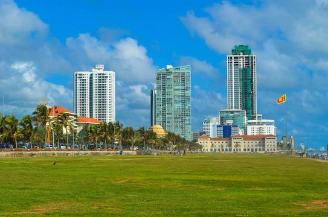
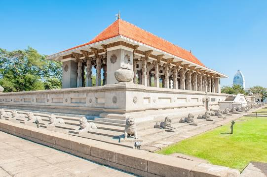
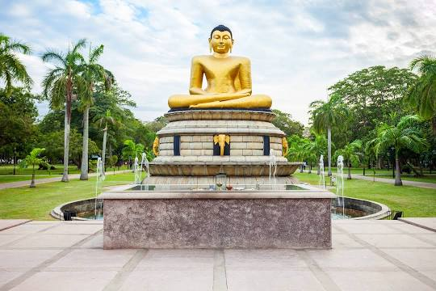
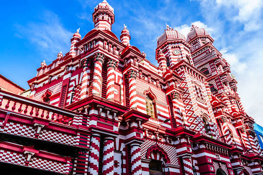
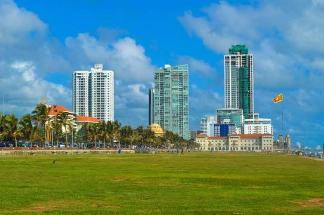
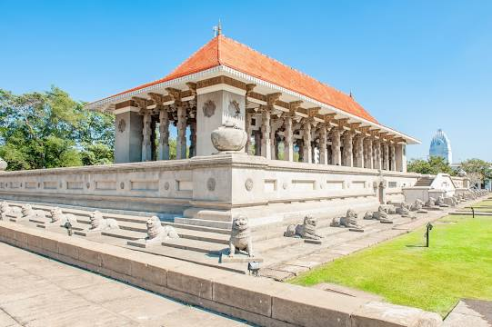
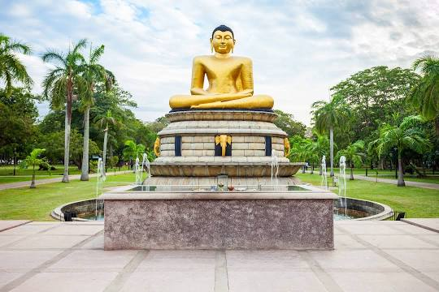
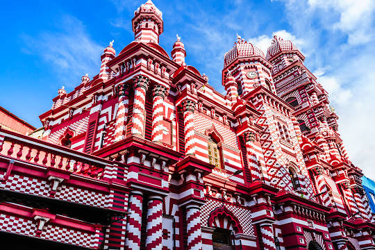

.png)
The Western Province is one of the nine provinces of Sri Lanka, the first level administrative division of the country. The provinces have existed since the 19th century but did not have any legal status until 1987 when the 13th Amendment to the Constitution of Sri Lanka established provincial councils.The most densely populated province of Sri Lanka, the Western Province which is 3,593 km2 in extent is home to the country’s legislative capital Sri Jayewardenepura. It is also home to the country’s commercial hub, Colombo. Almost all the premier educational institutions in the island are located in the western province. Universities in the province include the University of Colombo, the University of Sri Jayewardenepura, the University of Kelaniya, the Open University of Sri Lanka, the Sir John Kotelawala Defence University, the University of Moratuwa and the Sri Lanka Institute of Information Technology. The Western Province also has the largest amount of schools in the country. The western province consists of three districts: Colombo, Gampaha, and Kalutara. Colombo District is 642 km2 in area and its main city is Colombo. The other popular and important cities in the district are Dehiwala, Nugegoda, Maharagama, Homagama, Avissawella and Moratuwa. The Kotte Urban Development Council that was created in the 1930s with a modern building at Rajagiriya has been succeeded by the Kotte Urban Council, a large extent of which was removed and tagged onto the Colombo Municipal Council, ward of Borella, while the Battaramulla Urban Council was dissolved and a small extent of Battaramulla was tagged onto the Kotte Urban Council. The Kotte Urban Council turned to be the Sri Jayawardanapura Kotte Municipal Council in 1997.
 






